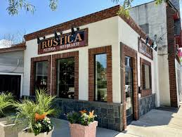
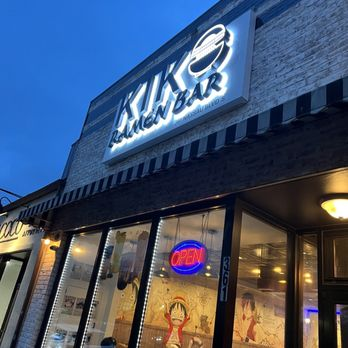
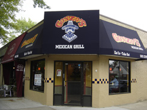

Discover Local Cuisines
Welcome to our local restaurants spotlight!

Rustica Brick Oven Café
Family-Owned & Operated, Rustica Brick Oven Café proudly upholds its tradition of delivering high-quality Italian cuisine.

Kiko Ramen Bar
Kiko Ramen offers authentic Japanese Ramen, house-made broth over 2 days without MSG. Enjoy the Ramen Soup, Japanese-style fried chicken wings, and Donburi!

Gonzo's Mexican Grill
Burritos, tacos, and other traditional Mexican dishes offered in a laid-back setting.